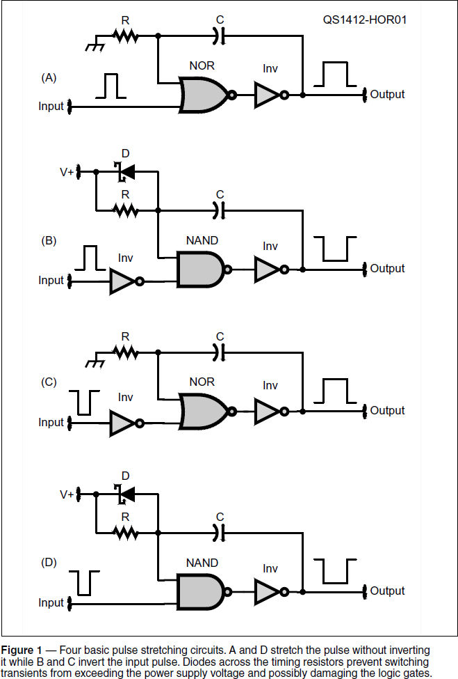
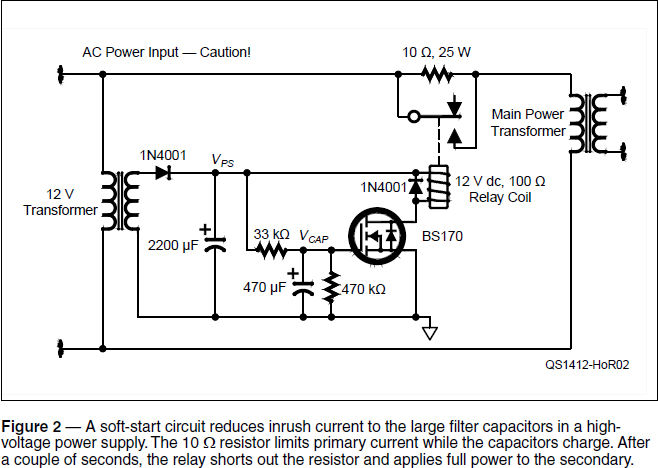
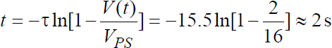

Experiment #143 — Delay Circuits
The Warner Brothers cartoon character Marvin the Martian seethes, “delays, delays!” But there is no need for a ham radio electronics designer to become “verry annngry.” Not at all! Delay circuits are found in many types of ham radio gear, and might even prevent an Earth-shattering ka-boom! This month’s column serves up two sample circuits to satisfy your search for spare seconds.
Pulse Stretcher
There are many applications to “stretch” a short pulse into a longer one. A circuit that detects RF might only generate a very short pulse if the incoming signal is brief or weak. That might generate a pulse too short to reliably trigger a logic circuit, be detected by a microprocessor, or light an indicator long enough to be easily seen by the naked eye. Switching or power transients are another notoriously unreliable input signal. One simple and inexpensive solution is to use a spare logic gate or two and an RC timing network, as shown in Figure 1.

Let’s take the circuit in Figure 1A as an example. In its resting or quiescent state, the input signal is LOW, the input connected to R and C is LOW, and the output of the OR gate formed by the combined NOR gate and inverter is also LOW. As soon as the input pulse changes to HIGH, the output of the OR gate also goes high. This causes current to flow through C, creating a voltage across R. Since C is assumed to be discharged, the initial voltage across R is approximately the same as the output signal, close to V+. Then it begins to drop according to the RC circuit’s time constant τ = RC. In a bit more than one time constant τ the voltage will have dropped enough at the OR gate’s input to be a logic-level LOW. If the input pulse has ended by then, both inputs to the OR gate will be LOW and so the output of the OR gate will return to LOW. If τ is longer than the input pulse, the output pulse has been “stretched” to approximately RC seconds. The output pulse will never be shorter than the input pulse. Why? (The output of the OR gate will be high as long as either input is high.)
You can follow similar steps to figure out how the circuits work in Figures 1B – 1D. In all, there are four circuits for stretching and inverting either positive- or negative-going pulses. You’ll find that using an oscilloscope is the best way of watching both the input and output pulses. Use a 555 timer circuit as described in Experiment #5 as your pulse generator.1
The exact amount of stretching depends on the logic switching thresholds of the logic family you are using. The closer the gate switching thresholds are to V+ and ground, the more the pulse will be stretched. For example, switching thresholds for the 4000-series of CMOS logic are about 10 and 90 percent of V+. Pulses will be stretched longer for this family of logic than for a logic family with thresholds closer to ½ V+. Why? (Because the voltage across R will have to decay longer to reach the lower switching threshold and that means the output pulse will stay HIGH longer.)
Soft-start Circuit
Linear amplifiers and other equipment with high-voltage (HV) power supplies need a bit of delay between the time the power switch is turned ON and the time full voltage is applied to the HV rectifiers and filter. The reason is inrush current. If a linear power supply’s filter capacitors are discharged when power is applied, they act like a short-circuit during those first few cycles of rectified ac. This causes very high current pulses in the transformer windings and through the rectifiers as the capacitors charge up.
After a few cycles of ac and depending on the resistance of the rectifiers and transformer secondary winding, the filter capacitors are charged to near their peak value and the amount of current drops dramatically. During the charging period however, peak currents can be 10 to 20 times normal current or even higher, placing significant stress on all of the power supply components.
Circuits have been employed that slowly increase transformer input voltage with a TRIAC or other variable ac source. The soft-start circuit presented in Figure 2 is simpler and satisfies quite nicely the requirement to limit that surge current. It limits inrush current with a 10 Ω power resistor. Until the relay activates, the 10 Ω resistor is in series with the primary winding of the main power transformer. After a suitable delay, the relay contacts short out the 10 Ω resistor and full power is applied to the main transformer.

To power the relay, an auxiliary power supply circuit is required. A small 12 V transformer supplies a 1N4001 diode and 2200 μF in a half-wave rectifier circuit. At light loads, the filtered output voltage, VPS, will be about 12 × 1.4 – 0.7 ≈ 16 V. (VPS will drop closer to 12 V when the relay coil draws current from the supply.)
The timing of when the relay switches is determined by the 33 k Ω resistor and 470 µF capacitor. When power is applied with the 470 μF capacitor completely discharged, it begins charging towards 16 V with a time constant of τ = RC = 33 × 103 × 470 × 10-6 = 15.5 s.
As the voltage across the 470 µF capacitor (VCAP) increases, it approaches the gate threshold voltage (VGS(Th)) of the BS170 FET. This is the point at which the FET will rapidly turn on and conduct drain current, acting more or less like a switch. How quickly the gate voltage will reach 2 V is determined by the equation:

Two seconds is plenty of time for a power supply’s filter capacitors to charge up. (This and similar formulas for RC timing circuits are posted on the Hands-On Radio web page for this experiment.)
Most 12 V relay coils have a resistance of around 100 Ω and so draw about 120 mA from a 12 V supply. If the on-resistance (RDS(On)) of the FET is a few ohms, it will dissipate PD=ID2 RDS(On)= 0.014 RDS(On) watts, which is a minimal amount of heat. The 470 kΩ resistor discharges the timing capacitor when power is removed so that the circuit will operate properly when power is again switched on. The second 1N4001 diode clamps the coil voltage so that a nasty inductive kickback transient doesn’t destroy the FET when the relay is turned off.
All of this is quite loosely estimated, which means there is plenty of room for experimentation by you! There is a lot of variation between relays — not only in the coil’s resistance but the relay’s pull-in voltage at which the coil will actually switch the contacts. Try changing the timing components, use different types of FETs or redesign the circuit to use an NPN transistor like the 2N4401, or maybe scrounge up some different relays and try them out. This will help you get a feel for how much variation you can expect out there in the real world.
You needn’t actually apply the soft-start circuit to a high-voltage supply — it will operate just fine on its own. You can get a sense for the timing just by listening to the relay or wiring an LED circuit through the normally-open contacts. If you use this circuit on an actual ac power supply, though, please remember that the 10 Ω resistor and the relay contacts carry the full ac mains voltage. That hazard is easy to forget when working with low-voltage circuits! Make sure you keep the ac wiring insulated and well away from the low-voltage dc circuits. No surprises, please!
1All previous Hands-On Radio experiments are available to ARRL members at www.arrl.org/hands-on-radio.